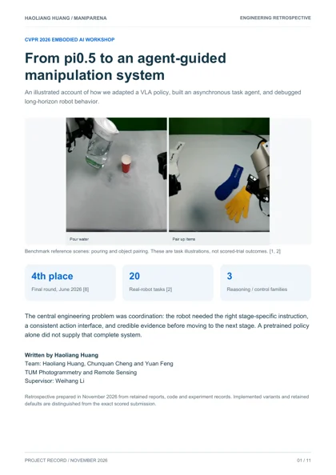
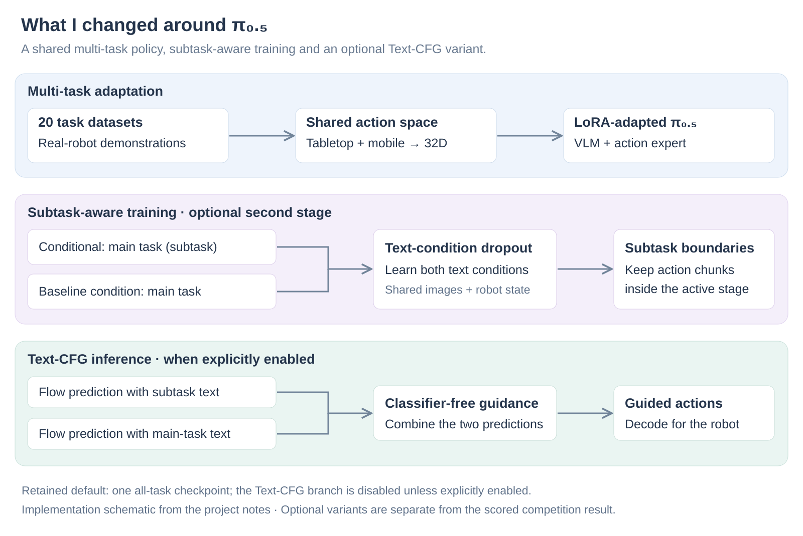
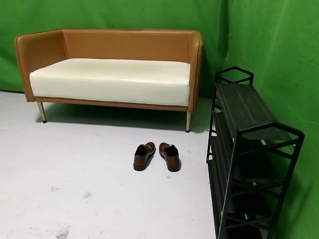

AI · VLA · Agent
CVPR 2026 Workshop · 4th / 32 teams
AI Agent + VLA for ManipArena
Fourth place among 32 teams in the CVPR 2026 Workshop ManipArena challenge. I built a manipulation stack that combines a multi-task VLA policy with asynchronous visual task planning and evidence-based progress verification, bridging learned control with long-horizon robot behavior.
TUM · Photogrammetry and Remote Sensing · CVPR WorkshopApr – May 2026 · Competition project

- Recognition
- 4th place / 32 teams · CVPR 2026 Workshop
- My focus
- π₀.₅ adaptation, subtask/Text-CFG variants, shared action representations and agent orchestration
- Benchmark
- 20 real-robot tasks across bimanual and mobile manipulation
- Control foundation
- LoRA-adapted π₀.₅ / OpenPI
View original documents3 PDFs
Illustrated project report · November 2026
How we built the ManipArena system
A bilingual, illustrated retrospective of our competition engineering: multi-task π₀.₅ adaptation, subtask conditioning and Text-CFG, asynchronous agent control, evidence-based completion checks, and what we learned from replay comparisons and failed refinements.
System at a glance
System architecture

A visual-language Agent tracks the active task stage while one π₀.₅ policy generates robot actions. Their shared state is the cached current subtask.
Agent reasoningVLA and action loopShared subtask state
Two loops share one task state
Fresh observations inform both reasoning and control. The Agent advances the task only after completion checks agree; the policy keeps using the latest valid subtask.
- Observe
Read camera images, robot state and the task instruction.
- Reason about progress
Plan the stage, retain evidence and verify whether it is complete.
- Generate actions
Condition one VLA checkpoint on the images, state and current task stage.
- Execute and observe again
Decode commands for the robot and return the next measured observations.
Decide what to do next—and when to advance
The Agent manages language-level task state. A latest-only queue prevents stale observations from piling up while the VLA continues with the cached stage.
- Initialize the plan
Use the first scene, task instruction, missions and skills to choose the initial stage.
- Keep fresh observations
Replace queued images with newer observations when the Agent is still processing.
- Predict and verify
Combine fine-action progress, an evidence bank and completion verification.
- Advance or hold
Update the cached subtask after the completion gate passes; otherwise keep the current stage.
Turn the current task stage into robot motion
OpenPI uses the same main checkpoint for whole-task and subtask-conditioned actions. Visual reasoning updates the text context rather than directly producing motor commands.
- Read policy inputs
Combine front and wrist images, robot state, and task text with the cached subtask.
- Predict an action chunk
The LoRA-adapted π₀.₅ model and action expert generate continuous actions; the Text-CFG branch can guide generation when explicitly enabled.
- Decode and execute
Restore tabletop or mobile control commands, with task-specific checks where enabled.
- Close the feedback loop
New images and robot state return to the policy and the asynchronous Agent.
A competition system for long-horizon manipulation
ManipArena combines execution reasoning, semantic reasoning, and mobile manipulation. A successful system must understand task order and scene conditions while also producing coordinated motion for two arms and, on mobile tasks, the head, lift, and base.
My project placed fourth among 32 teams in the workshop challenge. Its implementation also continued evolving after the competition. The architecture described here covers that broader system development, with the scored competition placement kept separate from later configuration choices.
My contribution
- Built a common training and inference representation for all 20 real tasks, preserving the distinct semantics of end-effector pose, gripper commands, head/lift motion, and base velocity.
- Adapted π₀.₅ with LoRA, implemented subtask-aware training and Text-CFG variants, and integrated three-camera observations with the task-conditioned action interface.
- Developed the asynchronous planner–predictor–verifier loop, task mission specifications, completion-evidence requirements, and guarded subtask transitions.
- Integrated task-specific perception and action-side checks where generic progress recognition was insufficient, and built action-prediction diagnostics to inspect temporal and coordinate errors.
How I adapted π₀.₅ for ManipArena
The policy work extends the pretrained π₀.₅ model through task data, action representations and language conditioning. I connected these changes to a robot interface that supports both tabletop and mobile manipulation.
| Step | Project modification | Role in the system |
|---|---|---|
| Multi-task data | Mix 20 real-task LeRobot datasets with front and two wrist-camera streams. | Train a shared policy across the competition task suite. |
| Shared control space | Map tabletop and mobile state/actions to a consistent representation; pad model actions to 32 dimensions. | Preserve the different meanings of pose deltas, gripper commands and base velocities. |
| Model adaptation | LoRA finetuning of the vision-language branch and action expert. | Adapt pretrained representations and continuous-action prediction to the task data. |
| Subtask-aware second stage | Use main-task-plus-subtask prompts and constrain annotated action chunks to the current subtask. | Associate similar-looking scenes with the appropriate stage-specific action. |
| Text-CFG variant | Train paired text conditions with dropout and support classifier-free guidance at inference. | Control how strongly the active subtask conditions action generation. |
Text-CFG and subtask-conditioned action generation
I implemented Text-CFG variants of the policy adaptation. In the subtask-aware setup, the conditional prompt is “main task (subtask)”, while the baseline, or unconditional, text condition is “main task”. Camera observations and robot state remain available in both branches.
Text-condition dropout during training teaches the model both forms of conditioning. When Text-CFG is enabled at inference, the two flow predictions are combined through classifier-free guidance, making subtask conditioning an explicit part of action generation.
The second-stage Text-CFG data path retains all 20 tasks and frames without subtask annotations, alongside subtask-labeled data. This preserves whole-task training coverage while adding stage-specific conditions.


Training variants and retained inference defaults
The notes distinguish two second-stage data paths: the subtask-only setup selects annotated frames from the 14 active tracker tasks, while the Text-CFG variant retains all 20 tasks and unannotated frames. Annotated action chunks are truncated or clamped at subtask boundaries.
The documented Text-CFG defaults are a 0.1 text-dropout probability, guidance scale 1.5 and 10 sampling steps. These are configuration values, not measured success-rate improvements.
The retained API defaults disable Text-CFG and load a single all-task policy checkpoint. Appending a VLM-provided subtask still supplies an ordinary text condition in that path. A Text-CFG-enabled configuration activates the guidance branch; it does not imply switching between a main and a second-stage checkpoint during execution.
Twenty tasks, three kinds of reasoning
The retained task report covers 20 real-robot tasks: ten execution-reasoning tasks, five semantic-reasoning tasks and five mobile-manipulation tasks. A shared policy handles the full suite; the final task registry enables visual subtask tracking for 14 tasks, including all five mobile tasks.
Sixteen tasks have historical subtask annotations, but only fourteen activate the tracker in the final configuration. Keeping the data annotations, training variants and deployed task registry separate was an important part of making the system reproducible.
| Task family | Scope | Example challenge |
|---|---|---|
| Execution reasoning | 10 tasks; 7 use subtask tracking | Order cup placement, insert a connector, open and fill a pencil case. |
| Semantic reasoning | 5 tasks; 2 use subtask tracking | Read button order or match objects to shape-labeled containers. |
| Mobile manipulation | 5 tasks; all use subtask tracking | Navigate, carry an object, place it and return to the home pose. |
Task examples



One policy, two decision timescales
The VLA branch uses OpenPI's π₀.₅ configuration with a LoRA-adapted Gemma vision-language branch and action expert. It receives front and two wrist-camera streams at a 224 × 224 model input size, together with robot state and task text. The all-task configuration uses a 32-dimensional padded action space and a 32-step action horizon.
The visual-language agent handles the active stage and its completion, while OpenPI predicts continuous robot action chunks. At episode start, the first planning call is synchronous so that the initial action has a defined task condition. Subsequent observations enter a latest-only queue; the controller continues with the cached valid subtask while the reasoning worker processes new evidence.
The default inference path uses one main policy checkpoint for both whole-task and subtask-conditioned actions. Optional text-guidance and second-stage configurations are separate experimental choices. Task registration also matters: fourteen tasks use subtask missions, while six pass their full instruction directly to the policy.
Progress recognition grounded in evidence
A progress predictor proposes the supported prefix of the current subtask's fine actions. A compact evidence bank retains useful image pairs, so a transient interaction can remain available after the scene changes. A verifier runs when completion is plausible, rather than necessarily on every camera frame.
Advancement requires agreement about the same active subtask, the required observed evidence, an actual verified completion, and sufficient confidence. Debouncing and per-frame evidence limits reduce accidental jumps through multiple stages. For example, bringing a bottle close to a cup is insufficient evidence of pouring: the mission checks the relevant tilt, transfer, release, and subsequent state.
Some tasks add SAM3 or geometric/action-side guards. These complement the learned policy and mission logic; they do not turn the system into an unrestricted universal manipulation planner.
Data and action-space engineering
Training mixes the 20 ManipArena real-task demonstration datasets in LeRobot format. The raw tabletop and mobile records use different vector layouts. I map them into a common representation while preserving what each channel physically means.
Tabletop state and action use fourteen dual-arm end-effector/gripper channels. Mobile state adds head and lift information for seventeen dimensions; mobile action additionally includes three base-velocity controls for twenty dimensions. Both action layouts are padded to the model's 32-dimensional space.
End-effector pose and head/lift deltas are handled separately from absolute gripper and base-velocity commands. At inference, decoded outputs restore the appropriate tabletop or mobile control protocol. This interface work is essential for sharing a policy without silently changing the meaning of its actions.
What failed, and how the system responded
My VLA diagnosis notes identify two recurring problems: visually similar states can require different next actions, and a failed manipulation can move the scene outside the successful demonstrations used for training. Subtask-conditioned language helps with the first problem; the second motivates explicit recovery logic and better coverage of failure states in the data.
The VLM notes document ambiguities in distance, opening extent, occlusion and short contact events. A single image can make grasping and releasing look alike, and sparse observations can miss one of several repeated object transfers. I used explicit completion evidence, temporal image pairs, persistent stage identities and task-specific perception checks to reduce these errors.
For example, the pencil-case mission checks three observed pick–transfer–release cycles before allowing closure. Button pressing requires both contact and withdrawal, and connector insertion requires alignment, seating and release evidence. These mechanisms address specific failure modes observed during development; they do not imply universal recovery from unseen failures.
Training, diagnosis, and lessons
The retained configuration finetunes with LoRA, AdamW, and a warmup-plus-cosine learning-rate schedule. Open-loop comparisons against demonstration actions provide diagnostics across the real-task suite; closed-loop task completion additionally depends on planning, perception, action execution, and recovery working together.
The competition and subsequent development strengthened my ability to connect a foundation model to a complete robot system: define a usable data contract, adapt the controller, manage reasoning latency, and make task transitions depend on observable evidence. The resulting system brings model training, concurrent software, and physical task semantics into one workflow.
Project visuals

Original documents
Project reports, theses and retained presentations in their original language. Presentations are provided as static PDF exports; personal identifiers are removed where necessary.
Related resources
Reviewed against my retained CVPR2026-Workshop technical report, the HTML training/deployment reports, the 20-task atlas, and the VLA/VLM diagnosis notes. The task registry, optional training paths and final inference defaults are described separately. Atlas images are task references, not evidence of scored-trial success. Competition placement and subsequent system development remain distinct. The task, VLA-training and Agent-inference tabs of my Google Doc were reviewed directly. The Text-CFG and second-stage training extensions are described as implemented variants, with the retained default inference path identified separately.